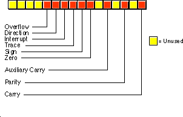

| Table of Content | Chapter Six (Part 2) |
|
| Table of Content | Chapter Six (Part 2) |
|
| CHAPTER
SIX: THE 80x86 INSTRUCTION SET (Part 1) |
||
| 6.0 -
Chapter Overview 6.1 - The Processor Status Register (Flags) 6.2 - Instruction Encodings 6.3 - Data Movement Instructions 6.3.1 - The MOV Instruction 6.3.2 - The XCHG Instruction 6.3.3 - The LDS, LES, LFS, LGS, and LSS Instructions 6.3.4 - The LEA Instruction 6.3.5 - The PUSH and POP Instructions 6.3.6 - The LAHF and SAHF Instructions 6.4 - Conversions 6.4.1 - The MOVZX, MOVSX, CBW, CWD, CWDE, and CDQ Instructions 6.4.2 - The BSWAP Instruction 6.4.3 - The XLAT Instruction 6.5 - Arithmetic Instructions 6.5.1 - The Addition Instructions: ADD, ADC, INC, XADD, AAA, and DAA 6.5.1.1 - The ADD and ADC Instructions 6.5.1.2 - The INC Instruction 6.5.1.3 - The XADD Instruction 6.5.1.4 - The AAA and DAA Instructions 6.5.2 - The Subtraction Instructions: SUB, SBB, DEC, AAS, and DAS 6.5.3 - The CMP Instruction 6.5.4 - The CMPXCHG, and CMPXCHG8B Instructions 6.5.5 - The NEG Instruction 6.5.6 - The Multiplication Instructions: MUL, IMUL, and AAM 6.5.7 - The Division Instructions: DIV, IDIV, and AAD 6.6 - Logical, Shift, Rotate and Bit Instructions 6.6.1 - The Logical Instructions: AND, OR, XOR, and NOT 6.6.2 - The Shift Instructions: SHL/SAL, SHR, SAR, SHLD, and SHRD 6.6.2.1 - SHL/SAL 6.6.2.2 - SAR 6.6.2.3 - SHR 6.6.2.4 - The SHLD and SHRD Instructions 6.6.3 - The Rotate Instructions: RCL, RCR, ROL, and ROR 6.6.3.1 - RCL 6.6.3.2 - RCR 6.6.3.3 - ROL 6.6.3.4 - ROR 6.6.4 - The Bit Operations 6.6.4.1 - TEST 6.6.4.2 - The Bit Test Instructions: BT, BTS, BTR, and BTC 6.6.4.3 - Bit Scanning: BSF and BSR 6.6.5 - The "Set on Condition" Instructions 6.7 - I/O Instructions 6.8 - String Instructions 6.9 - Program Flow Control Instructions 6.9.1 - Unconditional Jumps 6.9.2 - The CALL and RET Instructions 6.9.3 - The INT, INTO, BOUND, and IRET Instructions 6.9.4 - The Conditional Jump Instructions 6.9.5 - The JCXZ/JECXZ Instructions 6.9.6 - The LOOP Instruction 6.9.7 - The LOOPE/LOOPZ Instruction 6.9.8 - The LOOPNE/LOOPNZ Instruction 6.10 - Miscellaneous Instructions 6.11 - Sample Programs 6.11.1 - Simple Arithmetic I 6.11.2 - Simple Arithmetic II 6.11.3 - Logical Operations 6.11.4 - Shift and Rotate Operations 6.11.5 - Bit Operations and SETcc Instructions 6.11.6 - String Operations 6.11.7 - Conditional Jumps 6.11.8 - CALL and INT Instructions 6.11.9 - Conditional Jumps I 6.11.10 - Conditional Jump Instructions II |
Copyright 1996 by Randall Hyde
All rights reserved. Duplication other than for immediate display through a browser is prohibited by U.S. Copyright Law. This material is provided on-line as a beta-test of this text. It is for the personal use of the reader only. If you are interested in using this material as part of a course, please contact rhyde@cs.ucr.edu Supporting software and other materials are available via anonymous ftp from ftp.cs.ucr.edu. See the "/pub/pc/ibmpcdir" directory for details. You may also download the material from "Randall Hyde's Assembly Language Page" at URL: http://webster.ucr.edu Notes: This document does not contain the laboratory exercises, programming assignments, exercises, or chapter summary. These portions were omitted for several reasons: either they wouldn't format properly, they contained hyperlinks that were too much work to resolve, they were under constant revision, or they were not included for security reasons. Such omission should have very little impact on the reader interested in learning this material or evaluating this document. This document was prepared using Harlequin's Web Maker 2.2 and Quadralay's Webworks Publisher. Since HTML does not support the rich formatting options available in Framemaker, this document is only an approximation of the actual chapter from the textbook. If you are absolutely dying to get your hands on a version other than HTML, you might consider having the UCR Printing a Reprographics Department run you off a copy on their Xerox machines. For details, please read the following EMAIL message I received from the Printing and Reprographics Department:
We are currently working on ways to publish this text in a form other than HTML (e.g., Postscript, PDF, Frameviewer, hard copy, etc.). This, however, is a low-priority project. Please do not contact Randall Hyde concerning this effort. When something happens, an announcement will appear on "Randall Hyde's Assembly Language Page." Please visit this WEB site at http://webster.ucr.edu for the latest scoop. Redesigned 10/2000 with "MS FrontPage 98" using
17" monitor 1024x768 |
|
Until now, there has been little discussion of the instructions available on the 80x86 microprocessor. This chapter rectifies this situation. Note that this chapter is mainly for reference. It explains what each instruction does, it does not explain how to combine these instructions to form complete assembly language programs. The rest of this book will explain how to do that.
This chapter discusses the 80x86 real mode instruction set. Like any programming language, there are going to be several instructions you use all the time, some you use occasionally, and some you will rarely, if ever, use. This chapter organizes its presentation by instruction class rather than importance. Since beginning assembly language programmers do not have to learn the entire instruction set in order to write meaningful assembly language programs, you will probably not have to learn how every instruction operates. The following list describes the instructions this chapter discusses. A "" symbol marks the important instructions in each group. If you learn only these instructions, you will probably be able to write any assembly language program you want. There are many additional instructions, especially on the 80386 and later processors. These additional instructions make assembly language programming easier, but you do not need to know them to begin writing programs.
80x86 instructions can be (roughly) divided into eight different classes:
1) Data movement instructions
mov, lea, les , push, pop, pushf, popf
2) Conversions
cbw, cwd, xlat
3) Arithmetic instructions
add, inc sub, dec, cmp, neg, mul, imul, div, idiv
4) Logical, shift, rotate, and bit instructions
and, or, xor, not, shl, shr, rcl, rcr
5) I/O instructions
in, out
6) String instructions
movs, stos, lods
7) Program flow control instructions
jmp, call, ret, conditional jumps
8) Miscellaneous instructions.
clc, stc, cmc
The following sections describe all the instructions in these groups and how they operate.
At one time a text such as this one would recommend against using the extended 80386 instruction set. After all, programs that use such instructions will not run properly on 80286 and earlier processors. Using these additional instructions could limit the number of machines your code would run on. However, the 80386 processor is on the verge of disappearing as this text is being written. You can safely assume that most systems will contain an 80386sx or later processor. This text often uses the 80386 instruction set in various example programs. Keep in mind, though, that this is only for convenience. There is no program that appears in this text that could not be recoded using only 8088 assembly language instructions.
A word of advice, particularly to those who learn only the instructions noted above: as you read about the 80x86 instruction set you will discover that the individual 80x86 instructions are not very complex and have simple semantics. However, as you approach the end of this chapter, you may discover that you haven't got a clue how to put these simple instructions together to form a complex program. Fear not, this is a common problem. Later chapters will describe how to form complex programs from these simple instructions.
One quick note: this chapter lists many instructions as "available only on the 80286 and later processors." In fact, many of these instructions were available on the 80186 microprocessor as well. Since few PC systems employ the 80186 microprocessor, this text ignores that CPU. However, to keep the record straight...
The flags register maintains the current operating mode of the CPU and some instruction state information.The figure below shows the layout of the flags register:

The carry, parity, zero, sign, and overflow flags are special because you can test their status (zero or one) with the setcc and conditional jump instructions (see "The "Set on Condition" Instructions" and "The Conditional Jump Instructions"). The 80x86 uses these bits, the condition codes, to make decisions during program execution.
Various arithmetic, logical, and miscellaneous instructions affect the overflow flag. After an arithmetic operation, this flag contains a one if the result does not fit in the signed destination operand. For example, if you attempt to add the 16 bit signed numbers 7FFFh and 0001h the result is too large so the CPU sets the overflow flag. If the result of the arithmetic operation does not produce a signed overflow, then the CPU clears this flag.
Since the logical operations generally apply to unsigned values, the 80x86 logical instructions simply clear the overflow flag. Other 80x86 instructions leave the overflow flag containing an arbitrary value.
The 80x86 string instructions use the direction flag. When the direction flag is clear, the 80x86 processes string elements from low addresses to high addresses; when set, the CPU processes strings in the opposite direction. See "String Instructions" for additional details.
The interrupt enable/disable flag controls the 80x86's ability to respond to external events known as interrupt requests. Some programs contain certain instruction sequences that the CPU must not interrupt. The interrupt enable/disable flag turns interrupts on or off to guarantee that the CPU does not interrupt those critical sections of code.
The trace flag enables or disables the 80x86 trace mode. Debuggers (such as CodeView) use this bit to enable or disable the single step/trace operation. When set, the CPU interrupts each instruction and passes control to the debugger software, allowing the debugger to single step through the application. If the trace bit is clear, then the 80x86 executes instructions without the interruption. The 80x86 CPUs do not provide any instructions that directly manipulate this flag. To set or clear the trace flag, you must:
If the result of some computation is negative, the 80x86 sets the sign flag. You can test this flag after an arithmetic operation to check for a negative result. Remember, a value is negative if its H.O. bit is one. Therefore, operations on unsigned values will set the sign flag if the result has a one in the H.O. position.
Various instructions set the zero flag when they generate a zero result. You'll often use this flag to see if two values are equal (e.g., after subtracting two numbers, they are equal if the result is zero). This flag is also useful after various logical operations to see if a specific bit in a register or memory location contains zero or one.
The auxiliary carry flag supports special binary coded decimal (BCD) operations. Since most programs don't deal with BCD numbers, you'll rarely use this flag and even then you'll not access it directly. The 80x86 CPUs do not provide any instructions that let you directly test, set, or clear this flag. Only the add, adc, sub, sbb, mul, imul, div, idiv, and BCD instructions manipulate this flag.
The parity flag is set according to the parity of the L.O. eight bits of any data operation. If an operation produces an even number of one bits, the CPU sets this flag. It clears this flag if the operation yields an odd number of one bits. This flag is useful in certain data communications programs, however, Intel provided it mainly to provide some compatibility with the older 8080 mP.
The carry flag has several purposes. First, it denotes an unsigned overflow (much like the overflow flag detects a signed overflow). You will also use it during multiprecision arithmetic and logical operations. Certain bit test, set, clear, and invert instructions on the 80386 directly affect this flag. Finally, since you can easily clear, set, invert, and test it, it is useful for various boolean operations. The carry flag has many purposes and knowing when to use it, and for what purpose, can confuse beginning assembly language programmers. Fortunately, for any given instruction, the meaning of the carry flag is clear.
The use of these flags will become readily apparent in the coming sections and chapters. This section is mainly a formal introduction to the individual flags in the register rather than an attempt to explain the exact function of each flag. For more details on the operation of each flag, keep reading...
The 80x86 uses a binary encoding for each machine operation. While it is important to have a general understanding of how the 80x86 encodes instructions, it is not important that you memorize the encodings for all the instructions in the instruction set. If you were to write an assembler or disassembler (debugger), you would definitely need to know the exact encodings. For general assembly language programming, however, you won't need to know the exact encodings.
However, as you become more experienced with assembly language you will probably want to study the encodings of the 80x86 instruction set. Certainly you should be aware of such terms as opcode, mod-reg-r/m byte, displacement value, and so on. Although you do not need to memorize the parameters for each instruction, it is always a good idea to know the lengths and cycle times for instructions you use regularly since this will help you write better programs. Chapter Three and Chapter Four provided a detailed look at instruction encodings for various instructions (80x86 and x86); such a discussion was important because you do need to understand how the CPU encodes and executes instructions. This chapter does not deal with such details. This chapter presents a higher level view of each instruction and assumes that you don't care how the machine treats bits in memory. For those few times that you will need to know the binary encoding for a particular instruction, a complete listing of the instruction encodings appears in Appendix D.
The data movement instructions copy values from one location to another. These instructions include mov, xchg, lds, lea, les, lfs, lgs, lss, push, pusha, pushad, pushf, pushfd, pop, popa, popad, popf, popfd, lahf, and sahf.
The mov instruction takes several different forms:
mov reg, reg
mov mem, reg
mov reg, mem
mov mem, immediate data
mov reg, immediate data
mov ax/al, mem
mov mem, ax/al
mov segreg, mem16
mov segreg, reg16
mov mem16, segreg
mov reg16, segreg
The last chapter discussed the mov instruction in detail, only a few minor comments are worthwhile here. First, there are variations of the mov instruction that are faster and shorter than other mov instructions that do the same job. For example, both the mov ax, mem and mov reg, mem instructions can load the ax register from a memory location. On all processors the first version is shorter. On the earlier members of the 80x86 family, it is faster as well.
There are two very important details to note about the mov instruction. First, there is no memory to memory move operation. The mod-reg-r/m addressing mode byte (see Chapter Four) allows two register operands or a single register and a single memory operand. There is no form of the mov instruction that allows you to encode two memory addresses into the same instruction. Second, you cannot move immediate data into a segment register. The only instructions that move data into or out of a segment register have mod-reg-r/m bytes associated with them; there is no format that moves an immediate value into a segment register. Two common errors beginning programmers make are attempting a memory to memory move and trying to load a segment register with a constant.
The operands to the mov instruction may be bytes, words, or double words. Both operands must be the same size or MASM will generate an error while assembling your program. This applies to memory operands and register operands. If you declare a variable, B, using byte and attempt to load this variable into the ax register, MASM will complain about a type conflict.
The CPU extends immediate data to the size of the destination operand (unless it is too big to fit in the destination operand, which is an error). Note that you can move an immediate value into a memory location. The same rules concerning size apply. However, MASM cannot determine the size of certain memory operands. For example, does the instruction mov [bx], 0 store an eight bit, sixteen bit, or thirty-two bit value? MASM cannot tell, so it reports an error. This problem does not exist when you move an immediate value into a variable you've declared in your program. For example, if you've declared B as a byte variable, MASM knows to store an eight bit zero into B for the instruction mov B, 0. Only those memory operands involving pointers with no variable operands suffer from this problem. The solution is to explicitly tell MASM whether the operand is a byte, word, or double word. You can accomplish this with the following instruction forms:
mov byte ptr [bx], 0
mov word ptr [bx], 0
mov dword ptr [bx], 0 (3)
(3) Available only on 80386 and later processors
For more details on the type ptr operator, see Chapter Eight.
Moves to and from segment registers are always 16 bits; the mod-reg-r/m operand must be 16 bits or MASM will generate an error. Since you cannot load a constant directly into a segment register, a common solution is to load the constant into an 80x86 general purpose register and then copy it to the segment register. For example, the following two instruction sequence loads the es register with the value 40h:
mov ax, 40h
mov es, ax
Note that almost any general purpose register would suffice. Here, ax was chosen arbitrarily.
The mov instructions do not affect any flags. In particular, the 80x86 preserves the flag values across the execution of a mov instruction.
The xchg (exchange) instruction swaps two values. The general form is
xchg operand1, operand2
There are four specific forms of this instruction on the 80x86:
xchg reg, mem
xchg reg, reg
xchg ax, reg16
xchg eax, reg32 (3)
(3) Available only on 80386 and later processors
The first two general forms require two or more bytes for the opcode and mod-reg-r/m bytes (a displacement, if necessary, requires additional bytes). The third and fourth forms are special forms of the second that exchange data in the (e)ax register with another 16 or 32 bit register. The 16 bit form uses a single byte opcode that is shorter than the other two forms that use a one byte opcode and a mod-reg-r/m byte.
Already you should note a pattern developing: the 80x86 family often provides shorter and faster versions of instructions that use the ax register. Therefore, you should try to arrange your computations so that they use the (e)ax register as much as possible. The xchg instruction is a perfect example, the form that exchanges 16 bit registers is only one byte long.
Note that the order of the xchg's operands does not matter. That is, you could enter xchg mem, reg and get the same result as xchg reg, mem. Most modern assemblers will automatically emit the opcode for the shorter xchg ax, reg instruction if you specify xchg reg, ax.
Both operands must be the same size. On pre-80386 processors the operands may be eight or sixteen bits. On 80386 and later processors the operands may be 32 bits long as well.
The xchg instruction does not modify any flags.
6.3.3 The LDS, LES, LFS, LGS, and LSS Instructions
The lds, les, lfs, lgs, and lss instructions let you load a 16 bit general purpose register and segment register pair with a single instruction. On the 80286 and earlier, the lds and les instructions are the only instructions that directly process values larger than 32 bits. The general form is
LxS dest, source
These instructions take the specific forms:
lds reg16, mem32
les reg16, mem32
lfs reg16, mem32 (3)
lgs reg16, mem32 (3)
lss reg16, mem32 (3)
(3) Available only on 80386 and later processors
Reg16 is any general purpose 16 bit register and mem32 is a double word memory location (declared with the dword statement).
These instructions will load the 32 bit double word at the address specified by mem32 into reg16 and the ds, es, fs, gs, or ss registers. They load the general purpose register from the L.O. word of the memory operand and the segment register from the H.O. word. The following algorithms describe the exact operation:
lds reg16, mem32:
reg16 := [mem32]
ds := [mem32 + 2]
les reg16, mem32:
reg16 := [mem32]
es := [mem32 + 2]
lfs reg16, mem32:
reg16 := [mem32]
fs := [mem32 + 2]
lgs reg16, mem32:
reg16 := [mem32]
gs := [mem32 + 2]
lss reg16, mem32:
reg16 := [mem32]
ss := [mem32 + 2]
Since the LxS instructions load the 80x86's segment registers, you must not use these instructions for arbitrary purposes. Use them to set up (far) pointers to certain data objects as discussed in Chapter Four. Any other use may cause problems with your code if you attempt to port it to Windows, OS/2 or UNIX.
Keep in mind that these instructions load the four bytes at a given memory location into the register pair; they do not load the address of a variable into the register pair (i.e., this instruction does not have an immediate mode). To learn how to load the address of a variable into a register pair, see Chapter Eight.
The LxS instructions do not affect any of the 80x86's flag bits.
The lea (Load Effective Address) instruction is another instruction used to prepare pointer values. The lea instruction takes the form:
lea dest, source
The specific forms on the 80x86 are
lea reg16, mem
lea reg32, mem (3)
(3) Available only on 80386 and later processors.
It loads the specified 16 or 32 bit general purpose register with the effective address of the specified memory location. The effective address is the final memory address obtained after all addressing mode computations. For example, lea ax, ds:[1234h] loads the ax register with the address of memory location 1234h; here it just loads the ax register with the value 1234h. If you think about it for a moment, this isn't a very exciting operation. After all, the mov ax, immediate_data instruction can do this. So why bother with the lea instruction at all? Well, there are many other forms of a memory operand besides displacement-only operands. Consider the following lea instructions:
lea ax, [bx]
lea bx, 3[bx]
lea ax, 3[bx]
lea bx, 4[bp+si]
lea ax, -123[di]
The lea ax, [bx] instruction copies the address of the expression [bx] into the ax register. Since the effective address is the value in the bx register, this instruction copies bx's value into the ax register. Again, this instruction isn't very interesting because mov can do the same thing, even faster.
The lea bx,3[bx] instruction copies the effective address of 3[bx] into the bx register. Since this effective address is equal to the current value of bx plus three, this lea instruction effectively adds three to the bx register. There is an add instruction that will let you add three to the bx register, so again, the lea instruction is superfluous for this purpose.
The third lea instruction above shows where lea really begins to shine. lea ax, 3[bx] copies the address of the memory location 3[bx] into the ax register; i.e., it adds three with the value in the bx register and moves the sum into ax. This is an excellent example of how you can use the lea instruction to do a mov operation and an addition with a single instruction.
The final two instructions above, lea bx,4[bp+si] and lea ax,-123[di] provide additional examples of lea instructions that are more efficient than their mov/add counterparts.
On the 80386 and later processors, you can use the scaled indexed addressing modes to multiply by two, four, or eight as well as add registers and displacements together. Intel strongly suggests the use of the lea instruction since it is much faster than a sequence of instructions computing the same result.
The (real) purpose of lea is to load a register with a memory address. For example, lea bx, 128[bp+di] sets up bx with the address of the byte referenced by 128[BP+DI]. As it turns out, an instruction of the form mov al,[bx] runs faster than an instruction of the form mov al,128[bp+di]. If this instruction executes several times, it is probably more efficient to load the effective address of 128[bp+di] into the bx register and use the [bx] addressing mode. This is a common optimization in high performance programs.
The lea instruction does not affect any of the 80x86's flag bits.
6.3.5 The PUSH and POP Instructions
The 80x86 push and pop instructions manipulate
data on the 80x86's hardware stack. There are 19 varieties of the push and pop
instructions, they are
push reg16
pop reg16
push reg32 (3)
pop reg32 (3)
push segreg
pop segreg (except CS)
push memory
pop memory
push immediate_data (2)
pusha (2)
popa (2)
pushad (3)
popad (3)
pushf
popf
pushfd (3)
popfd (3)
enter imm, imm (2)
leave (2)
(2)- Available only on 80286 and later processors.
(3)- Available only on 80386 and later processors.
The first two instructions push and pop a 16 bit general purpose register. This is a compact (one byte) version designed specifically for registers. Note that there is a second form that provides a mod-reg-r/m byte that could push registers as well; most assemblers only use that form for pushing the value of a memory location.
The second pair of instructions push or pop an 80386 32 bit general purpose register. This is really nothing more than the push register instruction described in the previous paragraph with a size prefix byte.
The third pair of push/pop instructions let you push or pop an 80x86 segment register. Note that the instructions that push fs and gs are longer than those that push cs, ds, es, and ss, see Appendix D for the exact details. You can only push the cs register (popping the cs register would create some interesting program flow control problems).
The fourth pair of push/pop instructions allow you to push or pop the contents of a memory location. On the 80286 and earlier, this must be a 16 bit value. For memory operations without an explicit type (e.g., [bx]) you must either use the pushw mnemonic or explicitly state the size using an instruction like push word ptr [bx]. On the 80386 and later you can push and pop 16 or 32 bit values. You can use dword memory operands, you can use the pushd mnemonic, or you can use the dword ptr operator to force 32 bit operation. Examples:
push DblWordVar
push dword ptr [bx]
pushd dword
The pusha and popa instructions (available on the 80286 and later) push and pop all the 80x86 16 bit general purpose registers. Pusha pushes the registers in the following order: ax, cx, dx, bx, sp, bp, si, and then di. Popa pops these registers in the reverse order. Pushad and Popad (available on the 80386 and later) do the same thing on the 80386's 32 bit register set. Note that these "push all" and "pop all" instructions do not push or pop the flags or segment registers.
The pushf and popf instructions allow you to push/pop the processor status register (the flags). Note that these two instructions provide a mechanism to modify the 80x86's trace flag. See the description of this process earlier in this chapter. Of course, you can set and clear the other flags in this fashion as well. However, most of the other flags you'll want to modify (specifically, the condition codes) provide specific instructions or other simple sequences for this purpose.
Enter and leave push/pop the bp register and allocate storage for local variables on the stack. You will see more on these instructions in a later chapter. This chapter does not consider them since they are not particularly useful outside the context of procedure entry and exit.
"So what do these instructions do?" you're probably asking by now. The push instructions move data onto the 80x86 hardware stack and the pop instructions move data from the stack to memory or to a register. The following is an algorithmic description of each instruction:
push instructions (16 bits):
SP := SP - 2 [SS:SP] := 16 bit operand (store result at location SS:SP.) pop instructions (16 bits): 16-bit operand := [SS:SP] SP := SP + 2 push instructions (32 bits): SP := SP - 4 [SS:SP] := 32 bit operand pop instructions (32 bits): 32 bit operand := [SS:SP] SP := SP + 4
You can treat the pusha/pushad and popa/popad instructions as equivalent to the corresponding sequence of 16 or 32 bit push/pop operations (e.g., push ax, push cx, push dx, push bx, etc.).
Notice three things about the 80x86 hardware stack. First, it is always in the stack segment (wherever ss points). Second, the stack grows down in memory. That is, as you push values onto the stack the CPU stores them into successively lower memory locations. Finally, the 80x86 hardware stack pointer (ss:sp) always contains the address of the value on the top of the stack (the last value pushed on the stack).
You can use the 80x86 hardware stack for temporarily saving registers and variables, passing parameters to a procedure, allocating storage for local variables, and other uses. The push and pop instructions are extremely valuable for manipulating these items on the stack. You'll get a chance to see how to use them later in this text.
Most of the push and pop instructions do not affect any of the flags in the 80x86 processor status register. The popf/popfd instructions, by their very nature, can modify all the flag bits in the 80x86 processor status register (flags register). Pushf and pushfd push the flags onto the stack, but they do not change any flags while doing so.
All pushes and pops are 16 or 32 bit operations. There is no (easy) way to push a single eight bit value onto the stack. To push an eight bit value you would need to load it into the H.O. byte of a 16 bit register, push that register, and then add one to the stack pointer. On all processors except the 8088, this would slow future stack access since sp now contains an odd address, misaligning any further pushes and pops. Therefore, most programs push or pop 16 bits, even when dealing with eight bit values.
Although it is relatively safe to push an eight bit memory variable, be careful when popping the stack to an eight bit memory location. Pushing an eight bit variable with push word ptr ByteVar pushes two bytes, the byte in the variable ByteVar and the byte immediately following it. Your code can simply ignore the extra byte this instruction pushes onto the stack. Popping such values is not quite so straight forward. Generally, it doesn't hurt if you push these two bytes. However, it can be a disaster if you pop a value and wipe out the following byte in memory. There are only two solutions to this problem. First, you could pop the 16 bit value into a register like ax and then store the L.O. byte of that register into the byte variable. The second solution is to reserve an extra byte of padding after the byte variable to hold the whole word you will pop. Most programs use the former approach.
6.3.6 The LAHF and SAHF Instructions
The lahf (load ah from flags) and sahf (store ah into flags) instructions are archaic instructions included in the 80x86's instruction set to help improve compatibility with Intel's older 8080 mP chip. As such, these instructions have very little use in modern day 80x86 programs. The lahf instruction does not affect any of the flag bits. The sahf instruction, by its very nature, modifies the S, Z, A, P, and C bits in the processor status register. These instructions do not require any operands and you use them in the following manner:
sahf lahf
Sahf only affects the L.O. eight bits of the flags register. Likewise, lahf only loads the L.O. eight bits of the flags register into the AH register. These instructions do not deal with the overflow, direction, interrupt disable, or trace flags. The fact that these instructions do not deal with the overflow flag is an important limitation.
Sahf has one major use. When using a floating point processor (8087, 80287, 80387, 80486, Pentium, etc.) you can use the sahf instruction to copy the floating point status register flags into the 80x86's flag register. You'll see this use in the chapter on floating point arithmetic (See Chapter Fourteen).
The 80x86 instruction set provides several conversion instructions. They include movzx, movsx, cbw, cwd, cwde, cdq, bswap, and xlat. Most of these instructions sign or zero extend values, the last two convert between storage formats and translate values via a lookup table. These instructions take the general form:
movzx dest, src ;Dest must be twice the size of src.
movsx dest, src ;Dest must be twice the size of src.
cbw
cwd
cwde
cdq
bswap reg32
xlat ;Special form allows an operand.
6.4.1 The MOVZX, MOVSX, CBW, CWD, CWDE, and CDQ Instructions
These instructions zero and sign extend values. The cbw and cwd instructions are available on all 80x86 processors. The movzx, movsx, cwde, and cdq instructions are available only on 80386 and later processors.
The cbw (convert byte to word) instruction sign extends the eight bit value in al to ax. That is, it copies bit seven of AL throughout bits 8-15 of ax. This instruction is especially important before executing an eight bit division (as you'll see in the section "Arithmetic Instructions"). This instruction requires no operands and you use it as follows:
cbw
The cwd (convert word to double word) instruction sign extends the 16 bit value in ax to 32 bits and places the result in dx:ax. It copies bit 15 of ax throughout the bits in dx. It is available on all 80x86 processors which explains why it doesn't sign extend the value into eax. Like the cbw instruction, this instruction is very important for division operations. Cwd requires no operands and you use it as follows
cwd
The cwde instruction sign extends the 16 bit value in ax to
32 bits and places the result in eax by copying bit 15 of ax throughout bits
16..31 of eax. This instruction is available only on the 80386 and later
processors. As with cbw and cwd the instruction has no operands
and you use it as follows:
cwde
The cdq instruction sign extends the 32 bit
value in eax to 64 bits and places the result in edx:eax by
copying bit 31 of eax throughout bits 0..31 of edx. This
instruction is available only on the 80386 and later. You would normally use this
instruction before a long division operation. As with cbw, cwd,
and cwde the instruction has no operands and you use it as follows:
cdq
If you want to sign extend an eight bit value to 32 or 64 bits using these instructions, you could use sequences like the following:
; Sign extend al to dx:ax
cbw
cwd
; Sign extend al to eax
cbw
cwde
; Sign extend al to edx:eax
cbw
cwde
cdq
You can also use the movsx for sign extensions
from eight to sixteen or thirty-two bits.
The movsx instruction is a generalized form of
the cbw, cwd, and cwde instructions. It will sign extend an
eight bit value to a sixteen or thirty-two bits, or sign extend a sixteen bit value to a
thirty-two bits. This instruction uses a mod-reg-r/m byte to specify the two operands. The
allowable forms for this instruction are
movsx reg16, mem8
movsx reg16, reg8
movsx reg32, mem8
movsx reg32, reg8
movsx reg32, mem16
movsx reg32, reg16
Note that anything you can do with the cbw and
cwde instructions, you can do with a movsx instruction:
movsx ax, al ;CBW
movsx eax, ax ;CWDE
movsx eax, al ;CBW followed by CWDE
However, the cbw and cwde
instructions are shorter and sometimes faster. This instruction is available only on the
80386 and later processors. Note that there are not direct movsx equivalents
for the cwd and cdq instructions.
The movzx instruction works just like the movsx
instruction, except it extends unsigned values via zero extension rather than signed
values through sign extension. The syntax is the same as for the movsx
instructions except, of course, you use the movzx mnemonic rather than movsx.
Note that if you want to zero extend an eight bit register
to 16 bits (e.g., al to ax) a simple mov
instruction is faster and shorter than movzx. For example,
mov bh, 0
is faster and shorter than
movzx bx, bl
Of course, if you move the data to a different 16 bit
register (e.g., movzx bx, al) the movzx instruction is better.
Like the movsx instruction, the movzx
instruction is available only on 80386 and later processors. The sign and zero extension
instructions do not affect any flags.
The bswap instruction, available only on 80486
(yes, 486) and later processors, converts between 32 bit little endian and big endian
values. This instruction accepts only a single 32 bit register operand. It swaps the first
byte with the fourth and the second byte with the third. The syntax for the instruction is
bswap reg32
where reg32 is an 80486 32 bit general purpose
register.
The Intel processor families use a memory organization known as little endian byte organization. In little endian byte organization, the L.O. byte of a multi-byte sequence appears at the lowest address in memory. For example, bits zero through seven of a 32 bit value appear at the lowest address; bits eight through fifteen appear at the second address in memory; bits 16 through 23 appear in the third byte, and bits 24 through 31 appear in the fourth byte.
Another popular memory organization is big endian. In the big endian scheme, bits twenty-four through thirty-one appear in the first (lowest) address, bits sixteen through twenty-three appear in the second byte, bits eight through fifteen appear in the third byte, and bits zero through seven appear in the fourth byte. CPUs such as the Motorola 68000 family used by Apple in their Macintosh computer and many RISC chips employ the big endian scheme.
Normally, you wouldn't care about byte organization in
memory since programs written for an Intel processor in assembly language do not run on a
68000 processor. However, it is very common to exchange data between machines with
different byte organizations. Unfortunately, 16 and 32 bit values on big endian machines
do not produce correct results when you use them on little endian machines. This is where
the bswap instruction comes in. It lets you easily convert 32 bit big endian
values to 32 bit little endian values.
One interesting use of the bswap instruction
is to provide access to a second set of 16 bit general purpose registers. If you are using
only 16 bit registers in your code, you can double the number of available registers by
using the bswap instruction to exchange the data in a 16 bit register with the H.O. word
of a thirty-two bit register. For example, you can keep two 16 bit values in eax and move
the appropriate value into ax as follows:
< Some computations that leave a result in AX >
bswap eax
< Some additional computations involving AX >
bswap eax
< Some computations involving the original value in AX >
bswap eax
< Computations involving the 2nd copy of AX from above >
You can use this technique on the 80486 to obtain two
copies of ax, bx, cx, dx, si, di, and bp. You must exercise
extreme caution if you use this technique with the sp register.
Note: to convert 16 bit big endian values to 16 bit little
endian values just use the 80x86 xchg instruction. For example, if ax
contains a 16 bit big endian value, you can convert it to a 16 bit little endian value (or
vice versa) using:
xchg al, ah
The bswap instruction does not affect any
flags in the 80x86 flags register.
The xlat instruction translates the value in
the al register based on a lookup table in memory. It does the following:
temp := al+bx al := ds:[temp]
that is, bx points at a table in the current
data segment. Xlat replaces the value in al with the byte at the
offset originally in al. If al contains four, xlat
replaces the value in al with the fifth item (offset four) within the table
pointed at by ds:bx. The xlat instruction takes the form:
xlat
Typically it has no operand. You can specify one but the assembler virtually ignores it. The only purpose for specifying an operand is so you can provide a segment override prefix:
xlat es:Table
This tells the assembler to emit an es: segment
prefix byte before the instruction. You must still load bx with the address
of Table; the form above does not provide the address of Table
to the instruction. Only the segment override prefix in the operand is significant.
The xlat instruction does not affect the
80x86's flags register.
| Table of Content | Chapter Six (Part 2) |
|
Chapter Six: The 80x86 Instruction
Set (Part 1)
26 SEP 1996